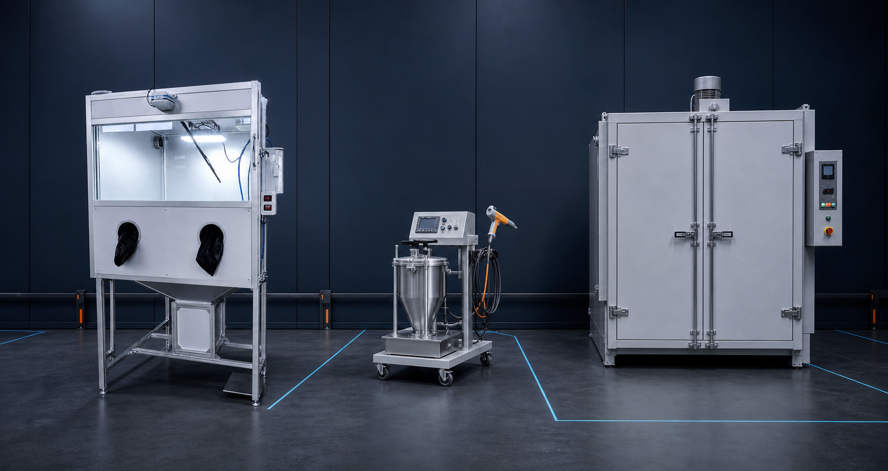
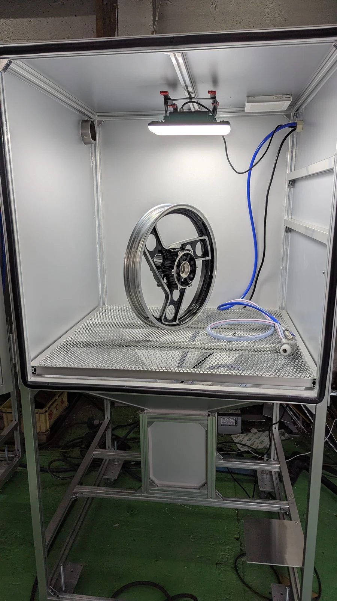
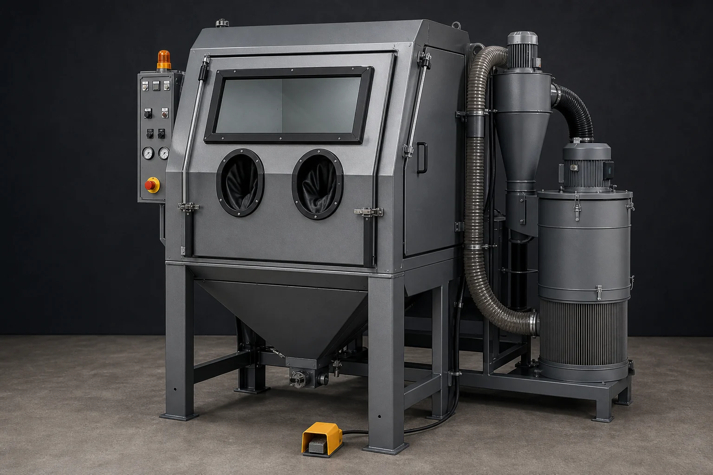

METAL FINISHING EQUIPMENT
表面を整え、
仕上げる。
その工程を一つに。
ブラストによる下地処理から、粉体塗装、焼付まで。ワークと現場に合う設備構成を、ひとつの窓口で一緒に考えます。
仕様・設置条件を確認後、正式見積をご案内します。

製品構成イメージ／実際の仕様・外観とは異なる場合があります
01 WET
02 SAND
03 COAT
04 CURE
01 / 販売中大型ウェットブラスト
02 / 開発予定サンドブラスト
03 / 準備中粉体塗装機
04 / 準備中粉体塗装用乾燥炉
PROCESS DESIGN
設備単体ではなく、
工程全体で考える。
処理する素材、ワーク寸法、仕上がり、処理量、設置環境。それぞれの条件を整理し、工程間の食い違いを減らします。
- 01SURFACE PREP
下地処理
ウェットまたは乾式ブラストを、目的と素材から選定。
- 02POWDER COATING
粉体塗装
色、膜厚、処理量、色替え頻度に合わせて設備を検討。
- 03CURING
焼付
ワーク寸法と粉体メーカー指定条件に合わせて炉を検討。
※材質や要求品質により、洗浄・乾燥・防錆・マスキング・冷却等の工程が別途必要です。
EQUIPMENT LINEUP
取扱機材
販売中の製品と、現在開発・取扱準備中の機材を掲載しています。

大型ワークに対応する実機
01 販売中・実機デモ受付
LARGE WET BLAST MACHINE
ホイールや大型エンジンに対応する、
大型ウェットブラスト。
大型ワークを丸ごと収められるキャビネット。本体電源はAC100V。作業中の視界確保を助ける電動ワイパーを搭載しています。
- 外形寸法
- W1000 × D800 × H1900mm
- 本体電源
- AC100V
- 推奨コンプレッサー
- 5.5kW
- 視認装備
- 電動ワイパー
販売価格898,000円税区分・送料・設置費等は正式見積
100Vコンプレッサーや200V・2.2kW機では、推奨条件に比べ噴射力・処理速度が低下します。
この設備を相談

AI生成コンセプト画像／製品仕様・外観は未確定
AI CONCEPT
02 開発予定・事前相談受付
DRY SAND BLAST MACHINE
錆・旧塗膜の除去を想定した、
乾式サンドブラスト。
研削材をエアで噴射する、通常のキャビネット型サンドブラストマシンを開発予定です。対象ワークと用途を伺いながら、必要な仕様を検討します。
現在検討している項目
- キャビネットの有効寸法
- 使用する研削材
- 必要なエア量・圧力
- 集塵方式
- 照明・視認性
- ワークの出し入れ方法
掲載画像はAIで作成した構想イメージです。仕様・価格・発売時期は未定です。
開発予定機を相談
設備構成イメージ／仕様策定中
03 取扱準備中・導入相談受付
POWDER COATING SYSTEM
塗るものと仕上がりから考える、
粉体塗装機。
対象ワークの材質・寸法、使用する粉体、色替え頻度、処理量、作業スペースを伺い、必要な設備構成を整理します。
案件ごとに確認
- ワークの材質・寸法・重量
- 色・質感・膜厚
- 処理量・色替え頻度
- 電源・圧縮空気・接地
- ブース・換気・集塵環境
仕様・価格・発売時期は策定中です。現時点では工程・導入相談のみ受け付けています。
粉体塗装を相談
設備構成イメージ／仕様策定中
04 取扱準備中・導入相談受付
POWDER CURING OVEN
ワーク寸法と焼付条件から考える、
粉体塗装用乾燥炉。
最大ワーク、必要温度・保持時間、一回の処理量、設置スペース、搬入経路、利用可能な熱源を確認し、受注仕様を検討します。
案件ごとに確認
- 最大ワーク寸法・重量・数量
- 粉体メーカー指定の焼付条件
- 炉内有効寸法・扉開口
- 電源・熱源・換気・排気
- 設置場所・搬入経路・安全設備
溶剤塗料や可燃性物質の加熱用途を示すものではありません。仕様・価格・発売時期は策定中です。
乾燥炉を相談
INTRODUCTION SUPPORT
必要な設備が決まっていなくても、
ご相談いただけます。
現在の工程、処理したいワーク、目標とする仕上がりから、必要な設備と確認事項を整理します。
- 01
用途を確認
ワーク、材質、寸法、重量、処理量、希望仕上がりを伺います。
- 02
設置条件を整理
スペース、搬入口、電源、エア、給排水、換気・集塵条件を確認します。
- 03
仕様・範囲を決定
本体、周辺設備、搬入・設置、工事、試運転等の範囲を明確にします。
- 04
正式見積
価格、納期、保証、支払条件、変更・キャンセル条件を書面で提示します。
BUSINESS DIVISIONS
ものづくりと発信を、
二つの事業で支える。
研装システムズは、表面処理設備を扱う産業機械事業部と、地域の店舗・中小事業者を支援するWeb制作事業部を分けて運営しています。
EQUIPMENT CONSULTATION
設備と工程を、
まとめて相談。
分からない項目は空欄で構いません。入力した内容を相談メモとしてコピーできます。